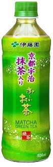

無香料／無調味／国産茶葉 １００％使用
| ●品名 | 緑茶（清涼飲料水） |
| ●原材料 | 緑茶（日本）、抹茶（京都府）、ビタミンC |
| ●内容量 | 600ml |
| ●賞味期限 | キャップに記載 |
| ●保存方法 | 直射日光や高温多湿の場所を避けて保存してください。 |
| ●販売者 | 株式会社 伊藤園（東京都渋谷区本町3-47-10） |
●未開栓の場合は常温で保存できます。開栓後はすぐにお飲みください。
製造固有記号・容器上部上段に記載
▽容器のままで温めたり、凍らせたりしないでください。容器が破裂したり、成分が沈殿することがあります。保存状態により、お茶の成分が沈殿することがありますが、品質には全く問題ありません。ボトル、ラベル、キャップを分別し、リサイクルにご協力ください。
●お客様相談室
フリーコール：0800-100-1100
http://www.itoen.co.jp/
Green Tea Beverage
本品は国内で製造しています